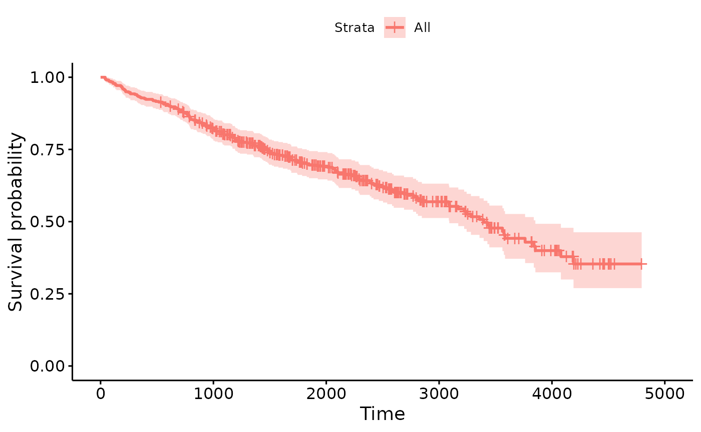

Session 8 lab exercise: What it’s about
Levi Waldron
Source:vignettes/session_lab.Rmd
session_lab.RmdLearning objectives
- Make stratified and unstratified Kaplan-Meier plots
- Perform Cox proportional hazards regression
- Assess proportional hazards assumption
Exercises
Load the Primary Biliary Cirrhosis (pbc) dataset from the survival package
- Mayo Clinic trial in primary biliary cirrhosis (PBC) of the liver conducted between 1974 and 1984, \(n=424\) patients.
- Randomized placebo controlled trial of the drug D-penicillamine.
- 312 cases from RCT, plus additional 112 not from RCT.
- Primary outcome is (censored) time to death
## id time status trt
## Min. : 1.0 Min. : 41 Min. :0.0000 Min. :1.000
## 1st Qu.:105.2 1st Qu.:1093 1st Qu.:0.0000 1st Qu.:1.000
## Median :209.5 Median :1730 Median :0.0000 Median :1.000
## Mean :209.5 Mean :1918 Mean :0.8301 Mean :1.494
## 3rd Qu.:313.8 3rd Qu.:2614 3rd Qu.:2.0000 3rd Qu.:2.000
## Max. :418.0 Max. :4795 Max. :2.0000 Max. :2.000
## NA's :106
## age sex ascites hepato spiders
## Min. :26.28 m: 44 Min. :0.00000 Min. :0.0000 Min. :0.0000
## 1st Qu.:42.83 f:374 1st Qu.:0.00000 1st Qu.:0.0000 1st Qu.:0.0000
## Median :51.00 Median :0.00000 Median :1.0000 Median :0.0000
## Mean :50.74 Mean :0.07692 Mean :0.5128 Mean :0.2885
## 3rd Qu.:58.24 3rd Qu.:0.00000 3rd Qu.:1.0000 3rd Qu.:1.0000
## Max. :78.44 Max. :1.00000 Max. :1.0000 Max. :1.0000
## NA's :106 NA's :106 NA's :106
## edema bili chol albumin
## Min. :0.0000 Min. : 0.300 Min. : 120.0 Min. :1.960
## 1st Qu.:0.0000 1st Qu.: 0.800 1st Qu.: 249.5 1st Qu.:3.243
## Median :0.0000 Median : 1.400 Median : 309.5 Median :3.530
## Mean :0.1005 Mean : 3.221 Mean : 369.5 Mean :3.497
## 3rd Qu.:0.0000 3rd Qu.: 3.400 3rd Qu.: 400.0 3rd Qu.:3.770
## Max. :1.0000 Max. :28.000 Max. :1775.0 Max. :4.640
## NA's :134
## copper alk.phos ast trig
## Min. : 4.00 Min. : 289.0 Min. : 26.35 Min. : 33.00
## 1st Qu.: 41.25 1st Qu.: 871.5 1st Qu.: 80.60 1st Qu.: 84.25
## Median : 73.00 Median : 1259.0 Median :114.70 Median :108.00
## Mean : 97.65 Mean : 1982.7 Mean :122.56 Mean :124.70
## 3rd Qu.:123.00 3rd Qu.: 1980.0 3rd Qu.:151.90 3rd Qu.:151.00
## Max. :588.00 Max. :13862.4 Max. :457.25 Max. :598.00
## NA's :108 NA's :106 NA's :106 NA's :136
## platelet protime stage
## Min. : 62.0 Min. : 9.00 Min. :1.000
## 1st Qu.:188.5 1st Qu.:10.00 1st Qu.:2.000
## Median :251.0 Median :10.60 Median :3.000
## Mean :257.0 Mean :10.73 Mean :3.024
## 3rd Qu.:318.0 3rd Qu.:11.10 3rd Qu.:4.000
## Max. :721.0 Max. :18.00 Max. :4.000
## NA's :11 NA's :2 NA's :6
Create a Surv object using variables “time” and “status”, add this to the pbc dataframe
Here “1” are patients who received transplants, and are thus removed from risk of death, at least due to liver cirrhosis. Transplantation may thus be related to risk, and not qualify as uninformative censoring. It could actually be considered a “competing hazard” because high-risk patients may be prioritized for liver transplant - a topic we don’t get to in this course. Instead, we will simply treat 0 (end of study) and 1 as censored, 2 (death) as an event.
##
## Attaching package: 'dplyr'## The following objects are masked from 'package:stats':
##
## filter, lag## The following objects are masked from 'package:base':
##
## intersect, setdiff, setequal, union
Plot a KM curve for all participants using library(survminer) function ggsurvplot().
## Loading required package: ggplot2## Loading required package: ggpubrfit <- survfit(y ~ 1, data = pbc2) ggsurvplot(fit)

Stratify by treatment and add a p-value to this plot (see ?ggsurvplot).
fit2 <- survfit(y ~ trt, data = pbc2) ggsurvplot(fit2, pval = TRUE)
Check whether these p-values correspond to results from a log-rank test.
survdiff(y ~ trt, data = pbc2)
## Call:
## survdiff(formula = y ~ trt, data = pbc2)
##
## n=312, 106 observations deleted due to missingness.
##
## N Observed Expected (O-E)^2/E (O-E)^2/V
## trt=1 158 65 63.2 0.0502 0.102
## trt=2 154 60 61.8 0.0513 0.102
##
## Chisq= 0.1 on 1 degrees of freedom, p= 0.7Perform a Cox proportional hazards regression, using the “trt” variable as a predictor.
## Call:
## coxph(formula = y ~ trt, data = pbc2)
##
## n= 312, number of events= 125
## (106 observations deleted due to missingness)
##
## coef exp(coef) se(coef) z Pr(>|z|)
## trt -0.05722 0.94438 0.17916 -0.319 0.749
##
## exp(coef) exp(-coef) lower .95 upper .95
## trt 0.9444 1.059 0.6647 1.342
##
## Concordance= 0.499 (se = 0.025 )
## Likelihood ratio test= 0.1 on 1 df, p=0.7
## Wald test = 0.1 on 1 df, p=0.7
## Score (logrank) test = 0.1 on 1 df, p=0.7Create a log-minus-log plot to test the proportional hazards assumption.
Using a simpler method from survminer:
library(survminer) ggsurvplot(fit2, fun = "cloglog")